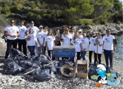
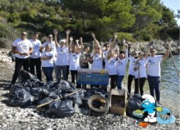
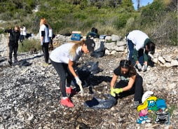
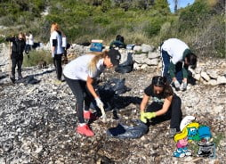
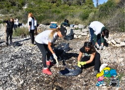
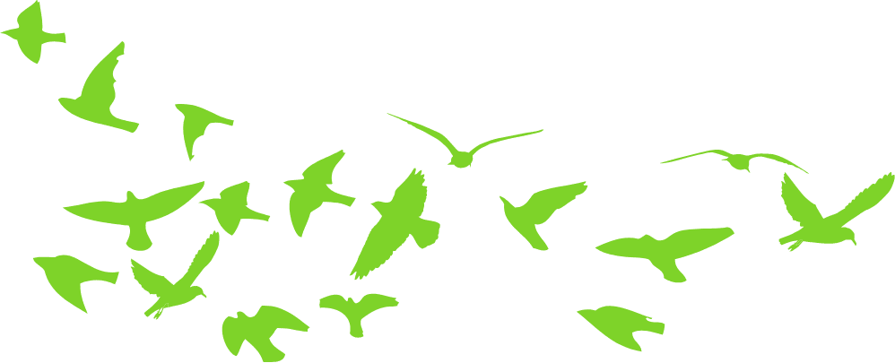
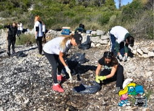

 


Više od pola tone smeća očišćeno je iz uvale Duboka na Otoku Čiovu u akciji koju je organiziralo Predstavništvo Europske komisije u Hrvatskoj
Svake godine milijuni tona smeća završe u oceanima s izravnim i smrtonosnim učinkom na divlje životinje, uključujući morske ptice,kitove, ribe i beskralježnjake, kao i koralje. Zagađenje mora na kopnu jedan je od glavnih pokretača iscrpljivanja morske biološke raznolikosti. Zbog toga EU svake godine organizira kampanju #EUBeachCleanUp čiji je cilj podizanje svijesti građana da daju svoj doprinos smanjenju onečišćenja naših mora i oceana.
Ono što je započelo kao simbolična gesta u nekoliko zemalja, s nekoliko volontera, sada je postalo globalni pokret koji uključuje stotine ljudi i prikuplja tone otpada na plažama, rijekama i jezerima diljem svijeta, dosegnuvši više od 80 zemalja. Stoga je i ove godine Predstavništvo Europske komisije u Hrvatskoj u suradnji s poznatom youtubericom pod nazivom Debela Barbara, entuzijastkinjom u borbi protiv zagađenja okoliša i volonterima Čisteći medvjedići organiziralo akciju čišćenja uvale Duboka na otoku Čiovu.
YouTuberica Debela Barbara ponosna je što je dio akcije. Vrijedni volonteri uspjeli su skupiti 580 kilograma smeća, plastike i raznog otpada kako bi pomogli u smanjenju onečišćenja plaža i mora te uvalu Duboka učinili ljepšom i čišćom. “Jadran je, osim kontinentalnih ljepota, svakako jedan od neprepoznatljivijih slika Hrvatske. Podizanjem svijesti o potrebi čistog okoliša želimo približiti građanima poruku da, uz malo truda, možemo osigurati da nam Hrvatska ostane lijepa i za buduće generacije“, naglasio je voditelj Predstavništva Europske komisije Ognian Zlatev.
Umjetnički i volonterski doprinos dala je i trogirska umjetnica Lucija Rilov koja se priključila akciji. Zanimljivo je istaknuti da su zaštitna lica kampanje dobroćudni plavi patuljci Štrumpfovi zato što više od 60 godina prenose univerzalne vrijednosti poput solidarnosti, hrabrosti, tolerancije, rada, poštovanja prirode i okoliša. Do 2025. godine sve države članice UN-a obvezuju se spriječiti i znatno smanjiti onečišćenje mora, uključujući morski otpad i onečišćenje hranjivim tvarima, a ovakve hvalevrijedne akcije poticaj su za sve građane da se aktivno uključe u borbu protiv klimatskih promjena kako bismo mogli uživati u čistom okolišu bez smeća.
